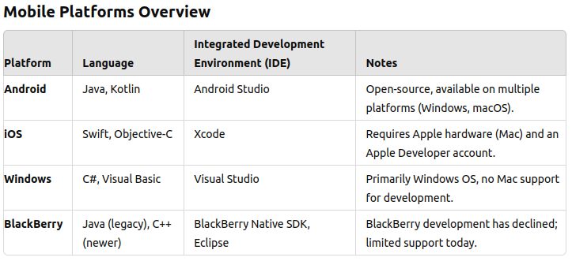
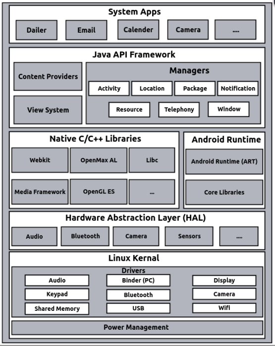
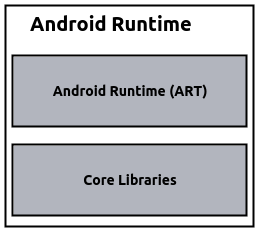
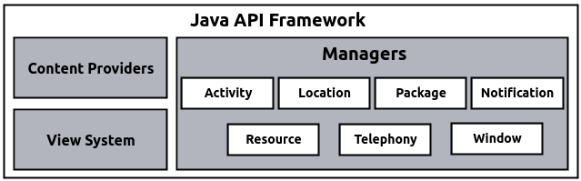

Introduction to Mobile Platforms
Mobile platforms are the operating systems that run on smartphones and other mobile devices. Each platform has its own unique features, development environment, and programming languages. Some of the most common mobile platforms include Android, iOS, Windows, and BlackBerry. Each platform requires different tools and languages for app development, and some are open to all developers, while others have restrictions such as requiring specific hardware or accounts.
App Distribution Methods
Different mobile platforms provide various ways to distribute applications. Some platforms have strict requirements, like needing to submit apps to an official app store, while others allow more flexible distribution methods such as through corporate websites or direct installation via USB.

History of Android
Android is an open-source mobile operating system built on the Linux kernel. It was mainly developed for devices like smartphones and tablets. Since its launch, it has become the most popular mobile operating system worldwide. Let’s look at what Android is and how it all started.
What is Android?
Android is an operating system created by Google, designed for mobile devices. It allows developers to make apps that can run on different types of hardware without needing to know the specifics of each device. Its flexibility, open nature, and easy-to-use tools have made it a popular choice.
- Open Source: Android is open-source, meaning anyone can use or change its code for free.
- Linux-Based: It is built on the Linux kernel, which helps it manage hardware and run software efficiently.
- Customizable: Device makers can modify the operating system to match their devices and create their own user experiences.
How Android Started
Android Inc. was founded in 2003 by Andy Rubin, Rich Miner, Nick Sears, and Chris White. Initially, it was meant to power digital cameras, but they soon shifted their focus to making it a mobile phone operating system.
- 2005 Acquisition by Google: In 2005, Google bought Android Inc. and continued its development, seeing its potential for mobile phones.
- Open Handset Alliance (OHA): In 2007, Google formed the Open Handset Alliance (OHA), a group of tech companies working together to develop Android as an open platform for mobile devices.
- First Android Device: The first Android phone, the HTC Dream (also called T-Mobile G1), was released in 2008, marking the start of Android’s success in the smartphone world.
Open Handset Alliance (OHA)
The Open Handset Alliance (OHA) is a group of 84 technology companies, including Google, Intel, Dell, HTC, and China Mobile. This group was created to work together to improve mobile technology and promote Android as a free and open platform.
- Founded by Google: Google led the creation of the OHA, officially forming it on November 5, 2007.
- Mission: The OHA aims to speed up innovation in mobile phones and provide users with a better and more affordable mobile experience.
- Developers of Android: The OHA developed Android, the first complete, open, and free platform for mobile devices.
- Google’s Leadership: Google plays a leading role in the OHA, guiding its efforts to push Android forward as the ‘captain’ of the alliance.
Android Development Methods
When developing Android applications, there are different types of apps that you can create depending on your needs and goals. These include native apps, pure web apps, and hybrid apps. Each type has its own characteristics, advantages, and limitations.
1: Native Apps
Native apps are built specifically for a platform using the platform’s supported languages and tools. For Android, this means using Java or Kotlin and Android Studio. They offer the best performance and user experience.
- Characteristics:
- Performance: Provides the best performance and responsiveness.
- Access to Features: Full access to device features such as the camera, GPS, and sensors.
- Platform-Specific: Developed specifically for one platform. Native apps can only generate an installer (package) for their own platform.
- Development Tools:
- iOS: Xcode, Swift, Objective-C
- Android: Android Studio, Java/Kotlin
- Windows: Visual Studio, C#
- Examples:
- Google Maps: Offers advanced mapping and navigation features tailored to Android.
- Settings: A system app providing access to device settings and configurations.
2: Pure Web Apps
Pure web apps are essentially websites designed to be accessed via a mobile browser. They do not require installation on the device and rely on universal access through web browsers.
- Characteristics:
- Installation: No need for installation; accessed through a web browser.
- Limitations: Cannot access mobile hardware features like GPS, camera, and touch sensors.
- Automatic Updates: Since content comes from the server, updates are automatically applied.
- Universal Access: Works across different platforms as long as the browser is compatible.
- Development Language:
- HTML, CSS, JavaScript
- Examples:
- Facebook Mobile Website: Provides a basic version of the social media site through a browser.
- Online Banking Sites: Accessible via the browser for managing financial transactions without app installation.
3: Hybrid Apps
Hybrid apps combine web technologies (HTML, CSS, JavaScript) with a native container that allows them to be installed like native apps. They offer a blend of both web app flexibility and native app access to device features.
- Characteristics:
- Cross-Platform: Can be used across multiple platforms with minimal changes.
- Access to Features: Some access to device features through a thin native container.
- Development Efficiency: Faster development compared to fully native apps by reusing code across platforms.
- Development Environments:
- Cordova, Xamarin (C#, Microsoft)
- Ionic Framework (powered by Cordova)
- Appcelerator Titanium, Sencha
- Examples:
- Uber: Ride-sharing app that uses native features like GPS and integrates web technologies for the user interface.
- Pinterest: Visual discovery app that blends native and web technologies to offer a responsive interface.
- eBay: E-commerce app using web technologies for product listings combined with native performance for user interactions.
Factors to be Considered for Development
When developing mobile applications, several factors must be considered to ensure that the app performs well and provides a great user experience across different devices and environments. These factors include device fragmentation, screen size, screen density, user interaction methods, computing power, memory, and battery capacity.
1: Device Fragmentation
The mobile ecosystem is highly fragmented, with various platforms like Android, iOS, Windows, and BlackBerry, each with its own versions and specifications. This presents a challenge for developers as they must ensure compatibility and functionality across a wide range of devices and operating systems.
- Platform Variability: Developers need to handle differences in operating systems and versions that are continually evolving.
- Device Compatibility: Ensuring consistent app behavior on devices with varying capabilities, screen sizes, and hardware configurations.
2: Screen Size
Mobile devices come in various screen sizes, from small smartphones to large tablets. Designing for smaller screens requires simplifying the layout and focusing on key functionalities while maintaining usability.
- Responsive Design: UI elements must adapt to different screen sizes for an optimal user experience.
- Streamlined Navigation: Mobile design prioritizes simplicity, minimizing unnecessary tabs and options, unlike desktop applications, which may use extensive menus and toolbars.
- Challenges: Ensuring that an application is optimized for different devices with various screen densities and sizes can be complex.
3: Screen Density
Screen density refers to the number of pixels per inch (PPI) on a display. Different devices have varying screen densities, so developers need to ensure that images and other graphical elements look sharp and clear across devices.
- Support for Multiple Densities: High-resolution graphics are necessary to support devices with higher screen densities.
- Scalable UI Elements: Icons, fonts, and other elements should be scalable without losing quality.
4: User Interaction
Mobile devices support different types of user interaction, from mouse and keyboard to touch and sensor-based input. Designing for touch and gesture-based interactions can involve multiple actions such as single taps, double taps, long touches, and more.
- Mouse & Keyboard: Primarily used in desktop environments or on devices with attached keyboards.
- Touch: The dominant interaction method for smartphones and tablets. Gestures like swiping, pinching, and tapping provide more dynamic interaction options.
- Sensor-Based: Devices come equipped with various sensors like accelerometers, gyroscopes, and GPS, enabling features like auto-rotation, gesture recognition, and location-based services.
5: Computing & Memory Capacity
Mobile devices generally have less computing power and memory capacity compared to desktops and servers. Developers must optimize their applications to run smoothly within these limitations.
- Efficient Algorithms: Developers need to create optimized code to handle the limited computing power and memory of mobile devices.
- Memory Management: Apps must manage memory efficiently to avoid crashes or slowdowns, especially on lower-end devices.
6: Battery Capacity
Battery life is a critical factor for mobile devices, as complex or poorly optimized apps can quickly drain battery power. Unlike enterprise systems, where power isn't a concern, mobile apps must be designed with energy efficiency in mind.
- Battery-Efficient Algorithms: Developers should design algorithms and code that minimize battery usage.
- Optimized Processes: Reduce background processes and unnecessary resource use to preserve battery life.
Android SDK
The Android SDK (Software Development Kit) is a comprehensive set of development tools that enable developers to create Android applications. It provides everything needed to build, test, debug, and deploy apps across a wide range of Android devices. The SDK includes libraries, APIs, build tools, debuggers, emulators, and documentation to streamline the app development process.
1: What is Android SDK?
The Android SDK is a collection of tools, libraries, and resources that developers use to create Android apps. It allows apps to communicate with Android’s operating system and hardware while providing a set of pre-built components that speed up and simplify development.
- Key Components:
- Libraries: A collection of reusable code that provides functionalities for various tasks, such as managing graphics, user interfaces, databases, and network operations.
- API (Application Programming Interface): The SDK offers APIs that allow developers to use Android’s core features, such as camera access, location services, and system notifications.
- Emulator: A virtual device that mimics the behavior of an actual Android device, allowing developers to test their applications without the need for physical hardware.
- Build Tools: Tools that compile and package the app into an APK (Android Package Kit) file, which can be installed on Android devices.
- Debugger: A tool that allows developers to inspect and fix code errors in real-time, making it easier to identify issues during development.
- Android Virtual Device (AVD): This tool lets developers create and configure various virtual devices with different screen sizes, resolutions, and Android versions, to test the app on a wide range of environments.
- Command-line Tools: Android SDK includes command-line utilities to manage devices, create emulators, and perform other development tasks directly from the terminal.
- Development Environment: The SDK integrates seamlessly with Android Studio, the official Integrated Development Environment (IDE) for Android development. Android Studio provides a user-friendly interface for writing code, designing user interfaces, debugging, and managing resources.
2: How Does the Android SDK Work?
When a developer builds an Android app, they utilize the Android SDK’s libraries and APIs to interact with the Android operating system. These components simplify common tasks like displaying user interfaces, handling network requests, and accessing device hardware like cameras and sensors.
- APIs and Libraries: Instead of writing everything from scratch, developers use the SDK's
pre-built APIs to handle things like:
- UI elements: Buttons, text fields, and layouts.
- Data storage: Managing databases (SQLite), shared preferences, or files.
- Network operations: Handling internet connections, making HTTP requests, or syncing data.
- Multimedia: Playing audio and video, or using the device’s camera.
- Sensors and hardware access: Accessing features like GPS, accelerometer, and Bluetooth.
- Emulator & AVD: The SDK emulator is used for testing apps on virtual devices that simulate real-world scenarios like different screen sizes, operating system versions, or hardware configurations. This makes it easier to test compatibility across various devices without having to own them.
3: Benefits of Using Android SDK
The Android SDK provides several advantages to developers:
- Speed and Efficiency: The SDK provides pre-built libraries and components, which save time and effort when developing apps. Developers can focus on building the core features of their app rather than writing common functionalities from scratch.
- Wide Range of Tools: The SDK includes tools for testing, debugging, and building apps. This integrated toolkit allows developers to work in one environment (Android Studio) without needing external tools.
- Multi-Device Testing: Developers can test their apps on a variety of virtual devices with different screen sizes, hardware configurations, and Android versions, ensuring the app runs smoothly across a wide range of Android devices.
- Access to Android Features: By using the SDK’s APIs, developers can access the full range of Android features, including notifications, sensors, and hardware, enabling them to create rich and powerful apps.
- Frequent Updates: Google regularly updates the SDK to provide new features, support for the latest Android versions, and tools that enhance app performance and security.
4: Development Workflow Using the Android SDK
The typical workflow when building an Android app with the SDK involves:
- 1. Setting Up Android Studio: The developer installs Android Studio, which comes with the Android SDK bundled in it.
- 2. Writing Code: Using Android Studio, the developer writes code in Java or Kotlin, utilizing the SDK’s libraries and APIs to build the app's functionality.
- 3. Designing UI: The developer uses the UI design tools in Android Studio to create the app’s interface, making it responsive across different device screen sizes.
- 4. Testing with Emulator: The app is tested on various virtual devices using the SDK’s emulator, ensuring compatibility and performance across different Android versions and hardware.
- 5. Debugging: The SDK’s debugging tools help the developer find and fix issues in the app before it is ready for deployment.
- 6. Building the APK: Once development is complete, the SDK’s build tools are used to compile the app and package it into an APK (Android Package Kit), which can be installed on Android devices.
5: Why the Android SDK is Essential for Android Development
The Android SDK is essential because it provides the core tools and components that developers need to build, test, and deploy Android apps efficiently. Without the SDK, developers would have to create everything from scratch, which would be time-consuming and error-prone.
- The SDK gives developers access to the same tools used by Google and other leading Android developers.
- It ensures that apps are optimized for performance and compatibility across the vast range of Android devices.
- It simplifies the process of integrating Android’s unique features (like notifications, sensors, or background services) into apps.
Android Architecture
Android architecture is the structure of the Android operating system, designed to support a variety of applications and services. It is built on a Linux kernel and consists of several layers that work together to handle different functions of the system and apps.
Linux Kernel
The Linux kernel is the core of the Android operating system. It is not just a standard Linux OS but is tailored for Android devices, acting as a layer between the hardware and software.

- Role: Provides essential functions and services to manage the device.
- Key Functions:
- Security: Ensures that data and operations are protected.
- Memory Management: Manages the device's memory allocation.
- Process Management: Handles running processes and tasks.
- Network Stack: Manages network connections and communication.
- Driver Model: Controls hardware components such as audio, display, and more.
- Drivers: Special programs that control and communicate with hardware components. Examples
include:
- Audio: Manages sound output and input.
- Binder: Handles communication between different apps and processes.
- Display: Controls what is shown on the screen.
- Keypad: Manages input from physical and virtual keyboards.
- Bluetooth: Handles wireless communication with other devices.
- Camera: Manages the device's camera functions.
- Shared Memory: Allows different processes to access common data.
- USB: Manages connections to USB devices.
- Wi-Fi: Handles wireless network connections.
- Power Management: Manages how the device uses and conserves battery power.
Hardware Abstraction Layer (HAL)
The Hardware Abstraction Layer (HAL) sits just above the Linux kernel and provides a standard interface for hardware components. It helps the Android system communicate with different hardware without needing specific drivers for each device.

- Role: Acts as an interface between the hardware and the higher-level software.
- Purpose: Allows Android to support a wide range of hardware by providing a consistent API.
- Components: Includes drivers for various hardware such as audio, camera, and sensors.
Libraries
These libraries are written in C/C++ and operate in the background of the system, providing essential functions and performance optimizations specifically for Android's embedded Linux environment.

- Function: Supports various system and application functions efficiently.
- Examples:
- WebKit: A web engine for rendering web pages.
- OpenMAX AL: A multimedia library for audio and video processing.
- libc: The standard C library for basic functions.
- Media Framework: Handles media playback and recording.
- OpenGL ES: Provides graphics rendering capabilities.
Android Runtime
The Android Runtime (ART) is crucial for running Android applications. It replaces the older Dalvik VM, offering improved performance and efficiency.
- ART (Android Runtime): Executes app code and provides runtime services.
- Dalvik Virtual Machine: The previous runtime environment for Android apps. It was register-based and executed files in the Dalvik Executable (.dex) format.
- Core Libraries: Provide fundamental Java functionalities for app development.
- Note: Each Android app runs in its own process with a separate instance of the runtime for better security and stability.
Java API Framework
This layer simplifies app development by providing APIs that allow apps to interact with system services and components.
- Purpose: Makes it easier to reuse and integrate components across different apps.
- Key Components:
- View System: Manages user interface elements and interactions.
- Content Providers: Allow apps to access and share data with other apps.
- Resource Manager: Manages app resources like strings, layouts, and images.
- Managers: Provide various system services such as activity management and notifications.
Application Layer
The top layer includes both system apps and third-party apps. System apps are pre-installed and provide basic functions for the device.

- System Apps: Core applications that come with the Android platform, written in Java.
Examples include:
- Email Client: Manages email communications.
- SMS Program: Handles text messaging.
- Calendar: Manages events and schedules.
- Maps: Provides navigation and location services.
- Browser: Allows web browsing.
- Contacts: Manages contact information.
- And Others: Additional apps that provide essential functions.
- Note: Third-party applications operate at the same level as these system apps and can utilize similar system services and resources.
Step-by-step process of how all components work when you are running a music streaming app:
-
System Apps: Your app's icon is displayed in the launcher (part of system apps). When you tap on it, the launcher triggers the app's start process.
At this point, your app is handled by the Java API Framework, but it’s still working through higher-level services provided by the system apps like the phone’s notification system and the background services that keep it alive.
-
Java API Framework: Once the app is running, you see the app's interface, created using components like buttons, lists, etc. (provided by the Java API Framework).
When you press "Play" to start a song, this framework handles user interaction and communicates the command (to play music) to the lower system layers.
-
Android Runtime (ART): The code of your music app (written in Java or Kotlin) is being executed by the Android Runtime (ART). This translates your app’s high-level code (like playing music) into machine code, so your phone can understand and run it efficiently.
ART also manages memory for your app, ensuring it doesn’t consume too much, especially if you are multitasking.
-
Native Libraries: Native libraries like OpenGL or Media Framework handle tasks like processing the music stream, controlling audio playback, or even rendering album art in the app.
For example, once you hit "Play," the app uses native libraries to decode the music file and output sound through the speakers.
-
Hardware Abstraction Layer (HAL): Now, your app needs to interact with the device's audio hardware (like speakers or headphones). It does this through the Hardware Abstraction Layer (HAL), which acts as a bridge between the app and the hardware.
The Audio HAL sends signals to the hardware, ensuring your music is played correctly through your headphones or speakers without your app needing to directly handle hardware instructions.
-
Linux Kernel: At the lowest level, the Linux Kernel manages communication between hardware and software. For example, it makes sure the audio hardware is powered on, controls CPU and memory allocation, and handles network data (if you're streaming online music).
If your app needs to download a song or stream from the internet, the kernel communicates with the network hardware (Wi-Fi or mobile data) to make that connection happen.
Android Studio
Android Studio is the official Integrated Development Environment (IDE) for Android development. It provides a comprehensive set of tools for building Android applications. In this topic, we will use Java as the programming language for our projects, not Kotlin. Below is an overview of the typical folder structure in an Android project and the files contained within each folder.
Android Folder Structure
- app üìÅ
- manifests üìÅ
- AndroidManifest.xml üìÑ
- java üìÅ
- com.example.appname üìÅ
- MainActivity.java üìÑ
- com.example.appname üìÅ
- res üìÅ
- drawable üìÅ
- Icons, images, and other drawable resources üìÑ
- layout üìÅ
- activity_main.xml üìÑ
- mipmap üìÅ
- Launcher icons of different sizes üìÑ
- values üìÅ
- strings.xml üìÑ
- colors.xml üìÑ
- styles.xml üìÑ
- drawable üìÅ
- res (generated) üìÅ
- R.java üìÑ (generated resource IDs)
- gradle scripts üìÅ
- build.gradle (Project-level) üìÑ
- build.gradle (Module-level) üìÑ
- manifests üìÅ
In an Android project, the folder structure plays a crucial role in organizing the various components and resources needed for development. Understanding this structure helps in navigating the project and managing the different elements effectively. Below is a detailed explanation of the key folders in an Android project.
1: Android Manifest Folder
The manifests üìÅ folder contains important configuration files for the Android app.
- AndroidManifest.xml üìÑ
This is the main configuration file for the Android application. It defines essential information about the app, including:
- Application components (activities, services, broadcast receivers, and content providers).
- Permissions required by the app.
- Application metadata and features.
- Application theme and settings.
Note: The manifest file outlines the structure and metadata of the app, specifying its components and requirements.
2: Android Java Folder
The java üìÅ folder contains Java source code files for the application.
- com.example.appname üìÅ
This package directory holds Java classes and source code for the app. It typically includes:
- MainActivity.java üìÑ
This is the main activity file where the primary code for the application’s main screen is written. It contains the logic for the UI and interacts with other components of the app.
Note: This folder includes Java source code files, organized by package names, and also contains test code.
- MainActivity.java üìÑ
3: Res Folder
The res üìÅ folder contains all the resources for the application. These are non-code files used in the app, such as:
- drawable üìÅ
Holds drawable resources like icons and images used in the app.
- layout üìÅ
Contains XML files that define the layout of the application's user interface. For example:
- activity_main.xml üìÑ - Defines the layout for the main activity.
- mipmap üìÅ
Stores launcher icons of different sizes to ensure the app icon displays correctly on various devices.
- values üìÅ
Contains XML files for defining values used throughout the app. These include:
- strings.xml üìÑ - Stores string resources.
- colors.xml üìÑ - Defines color resources used in the app.
- styles.xml üìÑ - Contains style definitions for UI elements.
Note: This folder contains all non-code resources such as XML layouts, UI strings, and bitmap images, organized into corresponding sub-directories.
4: Gradle Folder
The gradle scripts üìÅ folder contains Gradle build scripts used for managing the build process of the application.
- build.gradle (Project-level) üìÑ
This script configures settings that apply to the entire project, such as repositories and dependencies shared across modules.
- build.gradle (Module-level) üìÑ
This script is specific to each module and configures settings like compile SDK version, dependencies for the module, and build types.
Note: Gradle is an open-source build system used to automate building, testing, and deployment. It defines module-specific build configurations and allows you to add necessary dependencies for your Android application.
Understanding Android Runtime
The Android Runtime (ART) is a crucial part of the Android operating system responsible for executing applications. Initially, Android used the Dalvik Virtual Machine (DVM), but transitioned to ART to enhance performance and efficiency. This section explores the Android Runtime, compares it with the Java Virtual Machine (JVM), and explains the differences and reasons for these changes.
1. Overview of Android Runtime
Android Runtime enables the execution of Android applications by providing a runtime environment. ART replaced DVM to improve overall performance and battery efficiency. This section provides an overview of ART and its key features.
2. Dalvik Virtual Machine (DVM)
The Dalvik Virtual Machine (DVM) was the initial runtime environment used by Android to execute applications. It was designed specifically for mobile devices with limited resources.
- Characteristics:
- Register-Based Model: DVM uses a register-based architecture, which is more memory-efficient compared to the stack-based model used by JVM.
- Dalvik Bytecode: Executes Dalvik Executable (.dex) files. Each Android application runs in its own process with a dedicated instance of DVM.
- Memory Efficiency: Designed for low-memory devices, allowing multiple instances of DVM to run efficiently.
- JIT Compiler: From Android 2.2, DVM included a Just-In-Time (JIT) compiler that compiles bytecode into machine code at runtime to improve performance.
3. Android Runtime (ART)
ART replaced DVM starting from Android 4.4 (KitKat) to address performance and efficiency issues, providing a more robust runtime environment.
- Characteristics:
- AOT Compiler: ART uses Ahead-Of-Time (AOT) compilation, converting bytecode into machine code during the build process. This results in faster app startup times and improved runtime performance.
- Battery Performance: ART enhances battery life by reducing the need for frequent JIT compilation, which is resource-intensive.
- Garbage Collection: ART offers more efficient garbage collection compared to DVM, leading to better memory management.
- Storage & Boot Time: ART requires more storage and results in longer boot times as it builds a cache during the first boot.
4. JVM vs. DVM
Comparing the Java Virtual Machine (JVM) with the Dalvik Virtual Machine (DVM) helps understand why Android switched from DVM to ART and the differences in their architectures.
- JVM (Java Virtual Machine):
- Stack-Based Model: JVM uses a stack-based architecture, which requires more memory and is slower compared to DVM's register-based model.
- Bytecode Execution: Executes Java bytecode (.class files) and is platform-independent, supporting multiple operating systems.
- Single Instance: Typically, a single JVM instance is shared among multiple applications.
- Process: Java source code → Javac → Bytecode → JVM → Machine code
- DVM (Dalvik Virtual Machine):
- Register-Based Model: More memory-efficient and faster for mobile devices with limited resources.
- Dalvik Bytecode: Executes .dex files specific to Android, optimized for low-power devices.
- Multiple Instances: Allows multiple instances of DVM to run efficiently, each handling its own application.
- Process: Android source code → Javac → Bytecode → Dex compiler (dex tool) → Dalvik Bytecode (.dex file) → DVM → Machine code
5. JIT vs. AOT Compilation
JIT and AOT compilation are methods used to improve application performance, operating at different stages of the development process.
- JIT (Just-In-Time) Compilation:
- Runtime Compilation: JIT compiles bytecode into machine code at runtime, enhancing performance but consuming more resources during execution.
- AOT (Ahead-Of-Time) Compilation:
- Build-Time Compilation: AOT compiles code during the build process, leading to faster app startup times and better runtime performance.
6. ART vs. DVM
ART and DVM have different impacts on performance and system resources. This section compares ART and DVM based on several factors:
- Battery Performance: ART improves battery life compared to DVM by reducing the need for frequent JIT compilation.
- Storage: DVM is more suitable for devices with low storage due to its less resource-intensive nature.
- Boot Time: ART results in longer boot times as it builds a cache during the first boot, which can be a trade-off for improved performance.
- Application Launch Time: DVM has a slower launch time for applications compared to ART, which benefits from AOT compilation.
- Garbage Collection: ART has more efficient garbage collection, leading to better memory management compared to DVM.
The transition from DVM to ART represents a significant enhancement in the Android runtime environment. ART's advanced features, including AOT compilation and improved garbage collection, address the limitations of DVM, resulting in better performance, efficiency, and battery life for Android devices.
Android Boot Process

Android, like any operating system, goes through a series of steps to start up the device and make the system ready for user interaction. These steps are crucial to initialize hardware, system services, and load the core framework that supports Android applications. Below, we will explain each stage in detail:
1. Boot ROM
- When you press the power button, the device hardware (like the CPU) receives power.
- Boot ROM is the first component that runs, which is part of the hardware itself.
- Its job is to load the bootloader into RAM (the device’s main memory) from a fixed location (often the internal storage).
- This step is critical as it kicks off the entire boot process by giving the system a way to start executing the bootloader.
2. Bootloader
- Once the bootloader is loaded into RAM, it starts executing.
- The bootloader works in two stages:
- Stage 1: It detects the external RAM (device memory) and ensures that the system has enough memory to continue. It also prepares the system for the next steps.
- Stage 2: In this stage, the bootloader sets up important parts of the system, such as network configurations and memory allocation.
3. Kernel
- The bootloader then hands over control to the Linux Kernel, which is the core of the Android operating system.
- The kernel is responsible for:
- Setting up cache and protected memory areas.
- Initializing input/output (I/O) systems, such as touchscreens, USB, and Wi-Fi.
- Loading device drivers (for hardware like the camera, audio, etc.).
- Starting essential system processes, called daemons (background services that keep the system running).
- The kernel then searches for the first system process called init.
4. Init Process
- Init is the first process started by the kernel.
- Its role is to mount key system directories, such as:
/sys- contains system configuration files./dev- contains device files representing hardware components./proc- contains process information.- The init process also runs an init.rc script, which sets up system properties and triggers the Zygote process (which handles app management).
5. Zygote
- Zygote is a critical process that helps Android manage applications more efficiently.
- Its goal is to launch applications by:
- Preloading core library classes that apps need to run (e.g., Java libraries).
- Creating a shared memory space that allows multiple instances of the Dalvik Virtual Machine (DVM) to use the same code, saving memory.
- Starting applications quickly by copying the memory space instead of starting from scratch.
6. System Server and Services
- Once Zygote is initialized, it starts the System Server, which is responsible for launching important Android services like:
- Power Manager
- Activity Manager
- Telephony Manager
- Package Manager
- Bluetooth and Sensor Services
- Other core system services (e.g., Alarm Manager, Battery Manager, etc.)
- Once these services are up and running, the system broadcasts an "ACTION_BOOT_COMPLETED" signal, indicating that the system is fully booted and ready for use.
The Android boot process is a layered sequence that starts from the hardware level (Boot ROM) and ends with launching core system services via Zygote. Each step ensures that the hardware and software are correctly initialized, allowing the Android operating system to function smoothly and efficiently.
Android Development Tools
Android development relies on a variety of tools that help developers create, test, and debug their applications. These tools ensure that Android apps function correctly across different devices and operating systems. Understanding these tools is essential for efficient Android development. In this section, we will cover key Android tools like the Dalvik Virtual Machine (DVM), Android Virtual Device (AVD) Manager, Android SDK Manager, Android Emulator, DDMS, and the resource folder, highlighting their roles and how they relate to each other in the development workflow.
Dalvik Virtual Machine (DVM)
The Dalvik Virtual Machine (DVM) is a core part of Android's runtime environment, responsible for running applications. The DVM is designed specifically for mobile devices, optimizing memory usage, battery life, and performance. It allows multiple instances of applications to run efficiently in a low-memory environment, which is crucial for mobile devices.
When you write Android code in Java, the code is first compiled into bytecode by the Java compiler (Javac). Then, it is further converted into Dalvik bytecode using the Dex compiler, generating a ".dex" file that runs on the DVM. Although Android has since moved to the ART runtime, understanding DVM is still important for understanding the evolution of Android development.
- Role: Executes Android applications by interpreting ".dex" files.
- Relation to other tools: DVM works with the Android SDK and other development tools to run apps on actual devices or emulators.
Android Virtual Device (AVD) Manager
The AVD Manager is an essential tool that allows developers to create and manage virtual devices for testing. These virtual devices, called Android Virtual Devices (AVDs), emulate the hardware and software environment of real Android devices, enabling developers to test their applications on different device configurations, screen sizes, and API levels without needing physical devices.
- Role: Helps in creating and managing virtual devices to simulate various Android environments.
- Relation to other tools: Works in tandem with the Android Emulator to provide a platform for running and testing apps in a simulated environment.
Android SDK Manager
The Android SDK Manager is used to download, install, and manage different components of the Android SDK, such as tools, system images, platform versions, and libraries. The SDK (Software Development Kit) provides the essential development tools required for building Android applications. The SDK Manager ensures that the development environment is up to date and includes all the necessary components.
- Role: Manages the Android SDK components, ensuring developers have the tools needed to build applications.
- Relation to other tools: Integrates with Android Studio and other IDEs to provide updates and configurations for building Android apps.
Android Emulator
The Android Emulator is a powerful tool that mimics an Android device on your computer, allowing you to run and test Android applications without needing physical hardware. It simulates a variety of configurations, such as different screen sizes, resolutions, and Android versions, making it a valuable tool for testing apps under different conditions.
- Role: Provides a virtual platform to test and run Android apps without physical devices.
- Relation to other tools: Works closely with AVD Manager to run virtual devices and is a key part of the testing and debugging process.
Dalvik Debug Monitor Service (DDMS)
The Dalvik Debug Monitor Service (DDMS) is a powerful debugging tool for Android applications. It provides features like thread and heap information, logcat logs, file explorer, and emulator control. DDMS helps developers track the performance of their apps, identify memory leaks, and debug crashes.
- Role: Offers extensive debugging capabilities, allowing developers to monitor and control app behavior in real-time.
- Relation to other tools: It interacts with the Android Emulator and AVD Manager for debugging apps running on virtual devices, as well as physical devices connected via USB.
Resource Folder (Res)
The resource folder (res/) in Android projects stores non-code
resources
such as XML layouts, UI strings, images, and other drawable assets. These resources are organized
into
subdirectories, and Android automatically loads the correct resources based on the device
configuration
(e.g., screen size, orientation, or language).
- Role: Holds essential non-code assets such as layouts, images, and strings used by the application.
- Relation to other tools: Resources from the
res/folder are linked in the app's code and used by tools like the AVD Manager and Android Emulator to render the app’s UI during testing.
In Android development, tools like the DVM, AVD Manager, SDK Manager, Emulator, DDMS, and the resource folder play a crucial role in ensuring that developers can efficiently build, test, and debug their applications. These tools work together in harmony, creating an environment that simplifies the development process while addressing the unique challenges of mobile app development. From managing resources to testing apps on virtual devices, these tools form the backbone of Android development.
First Android Program: Hello World
In Android, the simplest way to get started is by creating an application that displays the text "Hello World" on the screen. Below, we will discuss the classes and methods used in the basic 'Hello World' app.
1. Main Components of the "Hello World" Android Program
- MainActivity.java: This is the main entry point of the app. It's a Java file where you define the behavior of the app's interface.
- activity_main.xml: This is the layout file where the UI of the app is defined, like buttons, text, etc. For the 'Hello World' program, it will simply contain a TextView that displays "Hello World".
2. MainActivity.java
This class is the backbone of any Android app. In this case, we are using Java to code the app’s behavior. Here's a simplified version of the "Hello World" code and an explanation of its elements:
public class MainActivity extends AppCompatActivity {
@Override
protected void onCreate(Bundle savedInstanceState) {
super.onCreate(savedInstanceState);
setContentView(R.layout.activity_main);
}
}
- MainActivity: This is the class that controls the main screen of the app. It extends AppCompatActivity, which provides backward compatibility for older Android versions.
- onCreate(Bundle savedInstanceState): This is the method that runs when the activity is created. It sets up the initial state of the app. The Bundle parameter holds the saved state of the activity (if any), which allows restoring the state when the app is relaunched.
- Why do we pass Bundle savedInstanceState?
- When your activity is temporarily destroyed (for example, when you rotate the phone or switch to another app), Android might want to recreate it later. To do this, it saves certain important data in the Bundle object.
- If there's data in the Bundle, it means Android is trying to restore your activity to the way it was before it was destroyed. If the Bundle is null, it means the activity is starting fresh, with no previous saved state.
- Example: Imagine you're using an app, and you rotate your phone. The screen changes from portrait to landscape. When this happens, Android destroys and recreates the activity. If you were filling out a form, you wouldn’t want to lose all the data you had entered. That’s where the Bundle comes in—it saves and restores that data for you.
- Why do we call super.onCreate(savedInstanceState)?
- Ensures Proper Setup: When you call super.onCreate(savedInstanceState), you're allowing the parent class (AppCompatActivity) to do its part in setting up the activity. Android's internal systems rely on this to properly initialize things like the window, UI, and other components before your specific code runs.
- Maintains Lifecycle Consistency: Every time an activity goes through its lifecycle (e.g., being created, started, resumed), Android needs to ensure that the appropriate steps are taken to transition the activity from one state to another. The parent class (through super) knows how to handle these transitions. If you don't call super.onCreate(), you risk breaking this lifecycle consistency, and your app might behave unpredictably.
- Builds on Existing Functionality: By calling super, you're saying, "First, do everything the system needs to do for this stage of the lifecycle. Then, I’ll add my own code." It's like building on top of a solid foundation provided by Android.
- Example Analogy: Imagine you're a chef cooking in a kitchen. Before you start, you need the kitchen setup—stoves turned on, ingredients placed in the right spots, etc. Android's AppCompatActivity is like the kitchen staff who takes care of all this setup for you. When you call super.onCreate(), you're letting them do their job first, so when you start cooking (writing your own code), everything is ready to go!
- setContentView(R.layout.activity_main): This method sets the layout of the activity, defined in the activity_main.xml file. It links the XML layout to the Java code.
3. activity_main.xml
This is the XML file where the app's user interface is designed. In our case, the interface is quite simple, with just a TextView displaying "Hello World".
<?xml version="1.0" encoding="utf-8"?>
<LinearLayout xmlns:android="http://schemas.android.com/apk/res/android"
android:layout_width="match_parent"
android:layout_height="match_parent"
android:orientation="vertical">
<TextView
android:layout_width="wrap_content"
android:layout_height="wrap_content"
android:text="Hello World!"
android:textSize="24sp"
android:layout_gravity="center"/>
</LinearLayout>
- LinearLayout: This is a container that arranges child elements in a single direction, either vertically or horizontally. Here, it's set to vertical.
- TextView: This widget displays the "Hello World!" message. We can set the text size, gravity, and other attributes to customize its appearance.
- android:text: The text attribute holds the message that will be displayed to the user, which is "Hello World!" in this case.
- android:layout_gravity: This property centers the TextView within the parent layout.
4. Breakdown of Key Classes & Methods
- AppCompatActivity: This is a base class for activities that wish to use modern features while providing backward compatibility with older Android versions. It provides important functions like managing the activity lifecycle.
- onCreate(Bundle): This method is called when the activity is first created. It is used to initialize the activity's UI and logic. Here, we use it to link our layout (XML) file to the Java file.
- TextView: A user interface element that displays text to the user. It is part of the android.widget package and is used in the layout file.
5. Running the Program
Once you create the "Hello World" program, you can run it on either an emulator or a physical Android device. The app will display a screen with "Hello World!" in the center.